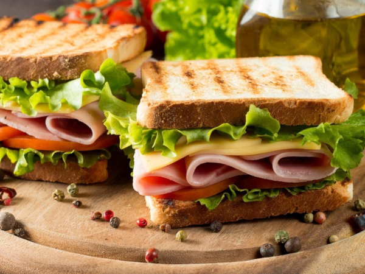

Ham Sandwich

Description
Have a look at another one of Odin Recipes' most prized recipes, the ham sandwich! Featuring cold cuts of delicious ham, slices of the freshest bread, and other ingredients that you yourself can customize, you're sure to enjoy this recipe! Try it out today with some of your dearest loved ones and friends!
Ingredients
- Bread slices
- Ham slices (as many and whatever kind you'd like!)
- Other ingredients of your choice! (lettuce, tomatoes, cheese, sauces, etc)
Steps
- If your ham is whole, cut the desired number of slices for your sandwich (we recommend 2-3 if you're feeling yourself ;>)
- Prep your bread slices (you can do so however you'd like; we like to toast our slices just slightly to add a nice crisp!)
- Assemble your sandwich, adding in your other tasty ingredients!
- Plate and serve up your amazing ham sandwich!
And there you have it! Odin Recipes' wonderfully crafted ham sandwich! We hope you enjoyed this recipe and will visit us again some time soon. Until then, happy eating and cooking!